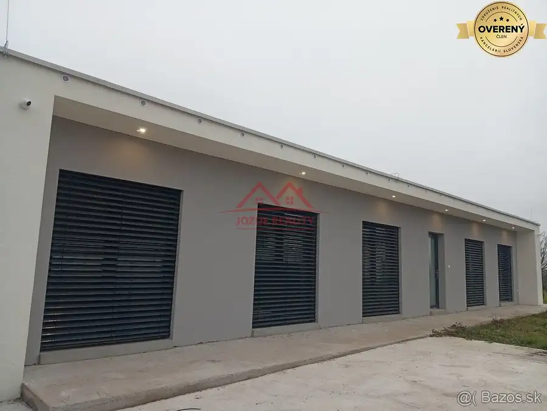
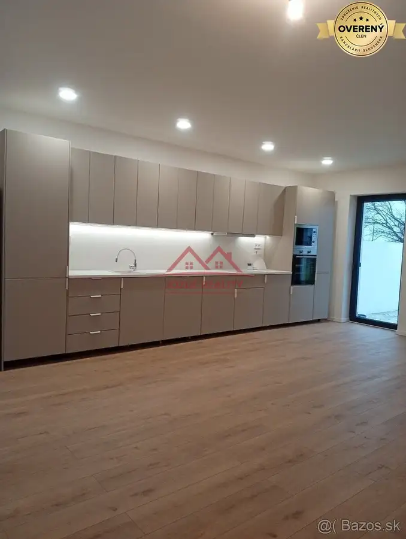
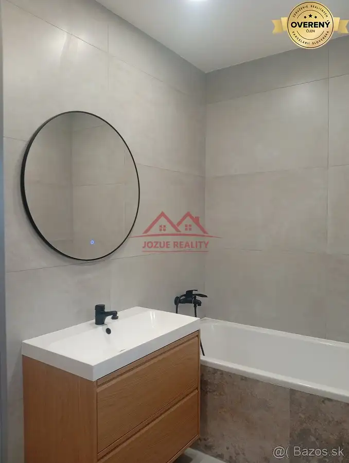
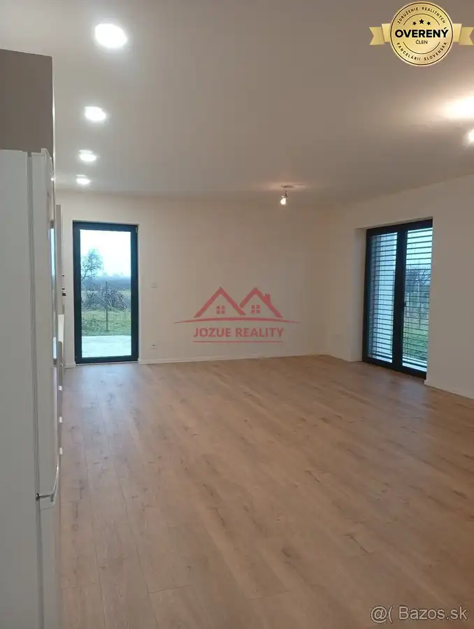
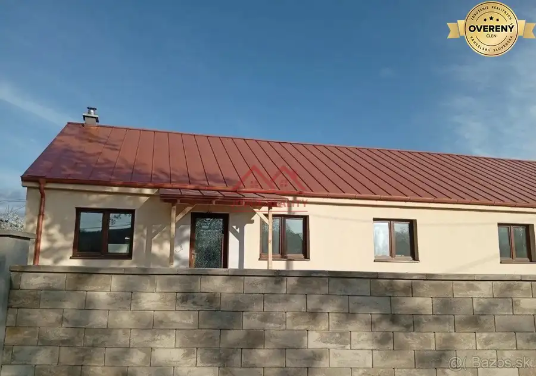
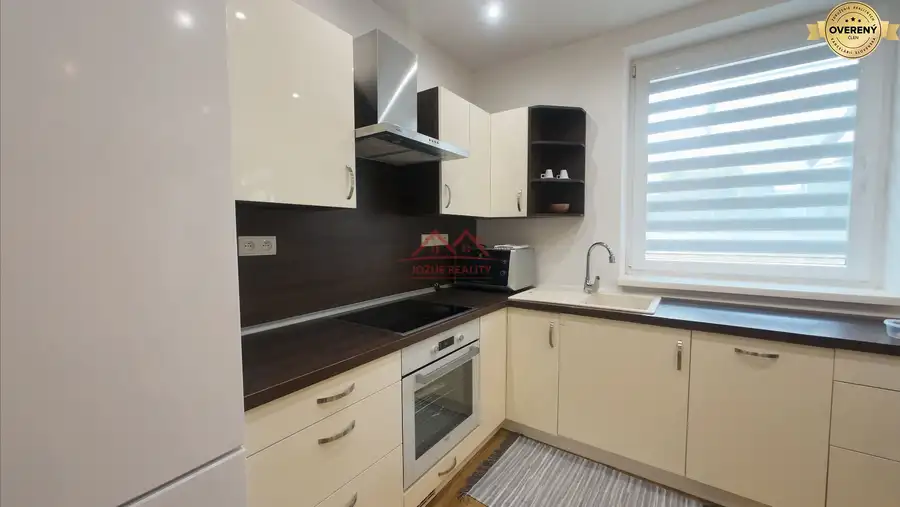
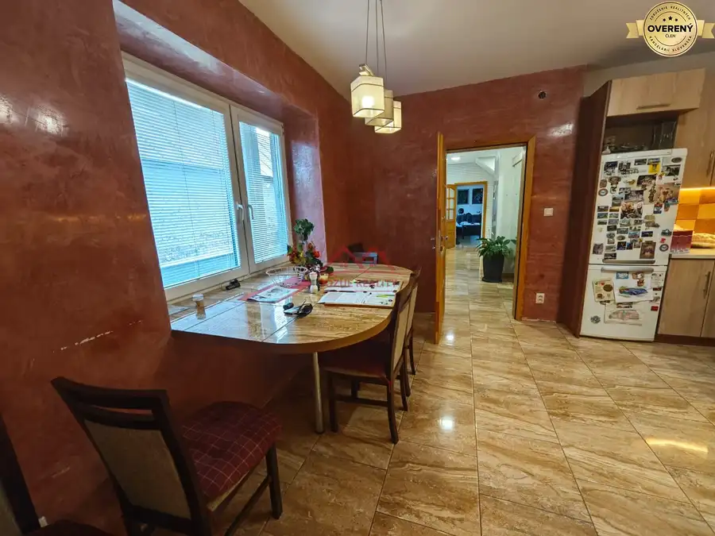

DOM NA PRENAJOM, OBEC SOKOLANY, KOSICE-OKOLIE
Okolie, Sokoľany





- Dispozícia3-izbový
- Plocha140 m²
- Poschodie0. z 1
- Stavúplne prerobený
- Vlastníctvoosobné
O nehnuteľnosti
Jozue Reality v zastúpení Ing. Milana Drotára ponúka na prenájom moderný rodinný dom – novostavbu v obci Sokoľany, vzdialenej len približne 5 minút od pripravovaného závodu VOLVO. Dom je ideálnym riešením pre firemných klientov alebo skupinu pracovníkov, ktorí hľadajú kvalitné a komfortné ubytovanie.
Základné informácie
Lokalita
: Sokoľany
Typ nehnuteľnosti: Rodinný dom – novostavba
Úžitková plocha: 140 m²
Stav: novostavba
Prenajíma sa celý dom
Kapacita: 2 až 7 osôb
Voľný od: 1. 8. 2026
Dispozícia
vstupná chodba,
priestranná kuchyňa prepojená s obývacou izbou,
3 samostatné spálne,
kúpeľňa,
samostatné WC.
Vybavenie
Dom sa prenajíma kompletne zariadený a je pripravený na okamžité bývanie.
K dispozícii je:
kompletne vybavená kuchyňa,
umývačka riadu,
práčka,
parkovanie priamo pri dome,
kamerový systém,
moderné a komfortné bývanie vhodné na dlhodobý prenájom.
Lokalita
Obec Sokoľany ponúka pokojné bývanie s výbornou dostupnosťou do Košíc a k závodu VOLVO a USSTEEL.
Výhody lokality:
približne 5 minút od závodu VOLVO,
rýchle napojenie na Košice,
pokojné prostredie,
vhodné pre zamestnancov aj firemných klientov.
Podmienky prenájmu
prenajíma sa celý rodinný dom alebo je možné prenajať aj po izbách
vhodný pre 2 až 7 osôb,
Cena
2 500€ / mesiac vrátane energií (cena sa môže ešte upraviť v závislosti od počtu osôb)
Pri podpise nájomnej zmluvy sa uhrádza:
jednomesačné nájomné,
vratný depozit vo výške jedného mesačného nájmu
JOZUE REALITY, s.r.o. pre Vás zabezpečí kompletný servis spojený s ponukou, kúpou, prevodom nehnuteľností, Spolupracujeme s finančnými špecialistami, ktorí sú na trhu viac ako 15 rokov a spolupracujú so všetkými bankami na trhu, ktoré poskytujú hypotéky. Ušetria Vám čas a peniaze. K tomu Vám vieme zabezpečiť aj poistné poradenstvo.
Ak máte záujem o obhliadku prípadne potrebujete viac informácii kontaktujte certifikovaného realitného makléra Ing. Milana Drotára, telefonicky: prípadne zastavte sa u nás osobne. Realitnú kanceláriu Jozue Reality s.r.o. nájdete na Štúrovej 8 v Košiciach.
Parametre
- Zastavaná plocha
- 180 m²
- Celková rozloha
- 140 m²
- Úžitková plocha
- 140 m²
- Poschodie
- prízemie
- Počet poschodí
- 1
- Počet izieb
- 3
- Vlastníctvo
- osobné
- Stav
- úplne prerobený
- Status
- aktívne
- Voda
- verejný vodovod
- El. napätie
- 230/400V
- Plyn
- áno
- Kanalizácia
- áno
- Internet
- optika
- Kúpeľňa
- áno
- Vykurovanie
- áno
- Parkovanie
- áno
- Inžinierske siete
- áno
- Postavené z
- tehla
- Zariadenie
- čiastočne
- Zateplený objekt
- áno
- Káblová televízia
- áno
- Energetický certifikát
- áno
- Predzáhradka
- áno
- Bezbariérový prístup
- áno
- Okná
- plastové
- Terén
- rovina
- Prístupová cesta
- asfaltová cesta
- Novostavba
- áno
- Dátum zverejnenia
- 2026-07-16
Kde to je
Mohlo by Vás zaujímať

Rodinné domyNové 999 999 999 €DOM NA PRENAJOM, OBEC: Tornyosnemeti- 10 min. VOLVO Okolie, Valaliky 3-izbový110 m²
Rodinné domyNové 1 200 €DOM NA PRENAJOM, BUNGALOV, KOŠICE-BARCA mestská časť Barca, Košice 4-izbový120 m²
Rodinné domyNové 15,- €DOM NA PRENAJOM, OBEC: HANISKA, KE-OKOLIE Okolie, Haniska 5-izbový250 m²